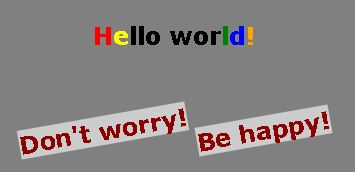

Установка программы Visual Studio Code (VSC)
Это редактор кода с умным автодополнением. Автодополения - подсказки облегчают набор кода
Данный плагин позволит запускать сайт и обновлять его, пока вы редактируете код, в фоновом режиме.
Создать папку "projects" на диске.
Создать в ней папку, например "myFirstProject".
Открыть эту папку из VSC через меню File/Open folder...
Добавить файл "index.html".
Используя комбинацию "!"+enter заполнить файл шаблоном html разметки.
Внутри тега body добавить текст "Hello World!".
Открыть в браузере нажатием "Go Live", командой внизу справа у VSC, командой от плагина "Live Server"
css стили: background, color
Создать страницу i2.html.
Добавить блок style, внутри для body установить фон - зеленый
Добавить текст куплета от стихотворения "В лесу родиласть ёлочка"
Текст рассположить по центру страницы (text-align)
Первые буквы строк стихотворения раскрасить в разные цвета
Информацию о стилях брать с сайта htmlbook.ru или запросами goolge
css стили: font-size
Подолжить редактировать i2.html.
Добавить жирность первой строке стихотворения, оборачивая тегами <b>
Добавить жирность второй строке оборачивая тегами <strong>
Добавить жирность третьей строке используя css стиль font-size
Все варианты можно использовать, хотя css версия более предпочтительна
Относительнся ссылка внтури сайта и обсолютная для сайта в сети
Создать или открыть index.html
Создать из нее ссылку на страницу i2.html
Создать обратную ссылку на страницу index.html
Создать ссылку на ya.ru
Можно также создать внутренню ссылку "#1", "#2", когда сайт большой удобно перематывать
css стили: text-decoration
Продолжить редактировать i2.html.
Выберите слово и подчеркните пунктирной линией
Выберите слово и подчеркните сплошной линией
Выберите слово и перечеркните
html:div, css: width, height
Создать страницу i3.html.
Добавить блок шириной и высотой 200px
Фон страницы сделать серый, блок закрасить в оранжевый
Расположить блок посередине экрана
css: padding, margin font-size
Редактировать страницу i3.html.
Добавить слово Hello World! внутри блока
Размер шрифта сделать 73px
Текст рассположить по центру
Добавить внутренний отступ блоку 20px (padding)
Добавить внешний верхний отступ блоку 200px(margin-top)
css: box-shadow, text-shadow, border-radius
Редактировать страницу i3.html.
Добавить тень для блока
Добавить тень для текста
Сделать углы блока круглыми (40px)
css: border-radius 50%
Редактировать страницу i3.html.
Блок разместить внутри другого блока
Сделать оборачиваемый блок круглым
Нужно чтобы квадрат был поcередине (padding, margin)
Границу делать двойной зеленой линией
css: border-radius 50%
Редактировать страницу i3.html.
Расположив обьекты друг над другом, нужно поменять некоторые стили
Оранжевый фон квадрата переделать в желтый. Для этого добавьте новый класс.
Двойную границу внешнего круга переделать в границу из точек.
html: span, css: background
Создать новую страницу i4.html.
Написать Hello world!, увеличить размер шрифта до 73px
Расположить текст посередине экрана, сверху сделать смещение 200px
Сделать буквы жирными
Буквы "H" и "e" обернуть тегами span
Чтобы между буквами не было пробелов, span блоки должны быть на одной строке
Первому span дать класс red, второму yellow, и раскрасить соответствующе
Редактировать страницу i4.html.
Конечные символы "l","d", "!" обернуть тегами span
Для каждого нового span добавить style c содержимым color
Раскрасить инлайн стилем в зеленый синий и оранжевый
css: display: inline-block;, transform
Редактировать страницу i4.html.
Ниже добавить 2 span в каждом по предложению: "Don't worry","Be happy!"
Нужно повернуть на -10 грудаусов оба предожения
Чтобы span мог поворачиваться, нужно применить стиль display: inline-block
